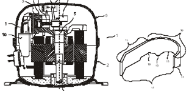

|
Arçelik
A.Þ.
Ýstanbul Teknik Üniversitesi
27 ve 30 Ekim 2003
Konu
baþlýklarý :
- Fikri
Haklar,
- Sinai
haklar,
- Marka
ve endüstriyel tasarim,
- Buluslarin
patent ile korunmasi,
- Patent
alma süreci ve maliyetler,
- Patent
bilgisinin kullanilmasi,
- Patent
arastirma,
- Patent
okuma ve yorumlama
|
Fikri
Haklar
|
|
Sinai
Haklar
|
Edebiyat
ve Sanat Eserleri
|
- Güzel
Sanat Eserleri
- Müzik
Eserleri
- EdebiyatEserleri
|
- Buluslar
- Endüstriyel
Tasarimlar
- Markalar
|
|
Fikri
Haklarin Korunmasi
|
|
Sinai
Haklar
|
Edebiyat
ve Sanat Eserleri
|
- Tescil
ettirilmelidir
- Tescil
her ülkede ayri ayri yaptirilmalidir
- Koruma
süresi sinirlidir
|
- Tescil
ettirilmez (Copyright)
- Evrenseldir
- Koruma
bulus sahibinin vefatindan sonra 70 yil devam eder
|
Sinai
Haklar
- Buluslar
- Endüstriyel
Tasarimlar
- Markalar
Marka
- Marka,
benzer mal ve hizmetleri baskalarinin mal ve hizmetlerinden
ayirt etmek için kullanilan isaretlerdir.
- Marka
olarak tescil edilebilen isaret ve sözcükler:
- Kisi
Adlari
- Sözcük
ve Sekiller
- Harfler
veya Rakamlar
- Ses
veya Melodiler
- Malin
Biçimi veya Malin Amblaji
Endüstriyel
Tasarim
-
Tasarim, Bir ürünün tümü veya bir parçasi veya üzerindeki
süslemenin çizgi, sekil, biçim, renk, doku, malzeme veya
esneklik gibi insan duygulari ile algilanan çesitli unsur
veya özelliklerinin olusturdugu bütünü ifade eder.
- Endüstriyel
Tasarim Tescili, yeni ve ayiredici nitelige sahip tasarimlar
için ilgili ülke Sinai Mülkiyet Idaresi nezdinde tescil
basvurusunda bulunulan tasarimin belirli bir süre koruma
altina alinmasidir.
Buluslar
Kompresör
yag yönlendiricisi
Istem: Ev cihazlarinda, tercihan buzdolaplarinda kullanilan,
içindeki parçalari tasiyan bir alt muhafaza (2), alt muhafazanin
(2) üstünde yer alan bir üst muhafaza (9) içeren, çalisma
esnasinda içindeki yataklarin yaglanmasi amaciyla kullanilan
yagin, sogutma amaciyla üst muhafazaya (9) püskürtülmesi esnasinda
emme susturucu (10)
bölgesine ve oradan da silindir (3) deligine gitmesini engelleyecek
ve hareketli parçalara çarpmayacak formda, üst muhafazanin
(9) i çine sabitlenen, bir yönlendirici (14) ile karakterize
edilen bir kompressör (1).
Patent
- Buluslarin
korunmasi için taninan süreli haktir.
- Patent
hakki, bulus sahibine bulusun açiklanmasi karsiliginda,
bulus konusu ürünü üretme, satma ve kullandirma konusunda
belirli bir süre ayricalik veren ve böylece bulus yapilmasini
özendirerek sanayinin gelismesine yardim eden bir haktir.
Patent
Belgesi
- Belli
bir ülkede
- Genellikle
20 sene için verilir
- Bulusun
nasil gerçeklestirilecegi ile ilgili detaylari içerir
Not:
Saðda görülen Arçelik'e ait WO 02/37038 A1 numaralý
uluslararasý patenti http://www.wipo.int/ipdl/en/search/pct/search-adv.jsp
sayfasýndan yapacaðýnýz bir tarama ile de bulabilirisiniz.
Ayný sayfadan yapýlan bir tarama sonucunda, Þubat 2004 tarihi
itibarýyla Arçelik'e ait bulunan tüm uluslararasý patentlerin
listesi ise aþaðýda verilmiþtir:
1.
(WO 97/49977) MODEL-BASED FAULT DETECTION SYSTEM FOR ELECTRIC
MOTORS
2. (WO 03/080915) A DRUM
3. (WO 03/030702) VACUUM CLEANER
4. (WO 03/018943) LOCKING MECHANISM
5. (WO 03/081153) A DOMESTIC APPLIANCE
6. (WO 98/21727) TWO-PIECE CONTROL PANEL USED FOR ELECTRICAL
HOUSEHOLD APPLIANCES
7. (WO 99/03661) METHOD OF BENEFITING FROM WASTE POLYURETHANE
FOAM MATERIAL AS AN INPUT MATERIAL IN PRODUCTION OF A COMPOSITE
MATERIAL AND COMPOSITE MATERIAL PRODUCED WITH THIS METHOD
8. (WO 99/51923) A REFRIGERATOR ILLUMINATED BY AN ACRYLIC
SHEET PLACED ABOVE THE
COLD AIR DIFFUSION SYSTEM AND BY LIGHTING TUBES
9. (WO 02/31419) REFRIGERATING APPARATUS CONTROL METHOD
10. (WO 02/032282) DISHWASHER BASKET WITH FOLDABLE CROCKERY
HOLDER RACKS [Repub: 27.12.2002]
11. (WO 02/079893) DOMESTIC APPLIANCE KNOB
12. (WO 02/068885) A METHOD FOR IMPROVING THE COOLING EFFICIENCY
13. (WO 02/065036) DOMESTIC APPLIANCE
14. (WO 02/052090) WASHING MACHINE
15. (WO 02/14593) A WASHING MACHINE WITH WASHING STEPS MONITORED
REMOTELY
16. (WO 02/37038) A DEFROSTING METHOD AND A REFRIGERATION
APPLIANCE USING THEREOF
17. (WO 02/32282) DISHWASHER BASKET WITH FOLDABLE CROCKERY
HOLDER RACKS
18. (WO 02/14593) A WASHING MACHINE WITH WASHING STEPS MONITORED
REMOTELY [Repub: 06.06.2002]
Patentler
ve Ekonomik Gelisme
|
Patent
Alma Süreci
|
|
TÜRKIYE
|
ULUSLARARASI
|
|
0
Basvuru
12 Rüçhan Sonu
15 Arastirma Talebi
18 Bas. Yayinlanmasi
t1 Arastirma Raporu
t1+6 Inceleme Talebi
t2 Inceleme Raporu
Patent
Alinmasi
|
0
12 PCT basvurusu
15 Arastirma Raporu
19 Inceleme Talebi
30 Ulusal Basvurular
Patent Alinmasi
|
Patent
Basvurusu Maliyeti
-
Patent
tarifnamesi yazimi, tercüme ve Türkiye basvurusu 2000$
-
PCT
Basvurusu 2500$
-
TOPLAM
4500$
-
Türkiye
yillik taksitler 150$
-
Yurtdisi
Basvuru Ücretleri
Yurtdisi Basvuru Maliyetleri
-
Her
ülke için basvurunun yapildigi ilk yil ~3000$
-
Patent
yillik taksitleri her yil artiyor ve ülkeler arasinda
farkliliklar gösteriyor.
-
Yillik
taksitler 300$ - 5000$ arasinda degisebiliyor.
-
Patent
veri tabanlarinda 30 milyondan fazla patent dokümani yer
almaktadir
-
Patentlerde
yayimlanan bilgilerin %70'i baska bir yerde yayimlanmamaktadir
-
Her
yil ABD, Japonya ve Avrupa patent ofislerine yaklasik
800,000 yeni patent basvurusu yapilmaktadir
|
Patent
Bilgisine Ulasim
|
|
IZLEME
(WATCH)
Sirketin
is sahasina giren teknolojik alanlardaki, tüm patent
basvurularinin periyodik olarak izlenmesi
|
ARASTIRMA (SEARCH)
Bir
proje baslangicinda veya herhangi bir asamasinda konu
ile ilgili patentlerin tespiti:
ep.espacenet.com
www.uspto.gov
www.delphion.com
www.dialog.com
|
|
Patent Yorumlama
Patent Analiz
|
Patent Tarifnamesinin Bölümleri
- Özet
- Tarifname
- Ilgili
TeknikAlan
- Bulus
öncesi durum (Prior art)
- Problemin
tarifi ve bulusun amaci
- Problemin
nasil çözüldügü
- Sekillerin
detayli açiklamasi
- Sekiller
- Istemler
Arçelik
Fikri Haklar Organizasyonu
Arçelik Patent Basvurulari
|
Istemler
|
- Genel
ana bir istem
- Ana
isteme bagli istemler
|
- Her
bir çözüm alternatifi için bagimsiz istemler
- Her
bir bagimsiz isteme bagli istemler
|
Iki Kisimli Istemler
- Teknigin
mevcut durumunun anlatildigi giris kismi
- Yeni
özelliklerin belirtildigi karakterize edilen kisim
|